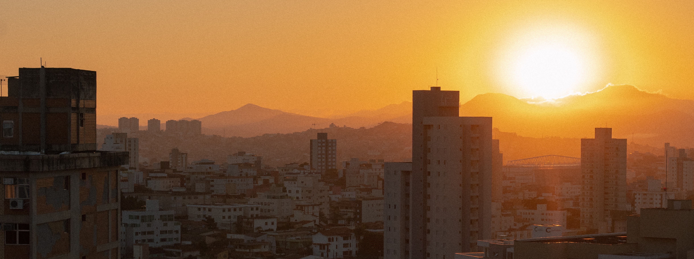
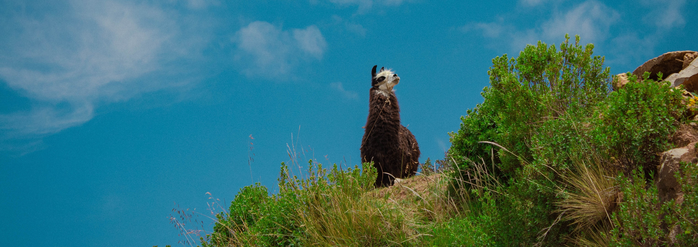

Quem sou eu?
a grande questão não respondida da humanidade. "definir é limitar" - wilde, oscar.
Luana Campos Takeishi [Luana Catake]
Cientista cursando Ciência da Computação no Instituto de Ciências Exatas e Informática (ICEI) da PUC - Minas Belo Horizonte, Unidade Praça da Liberdade, 1° Período.
Formada em Técnico de Mecatrônica no CEFET - MG Unidade Varginha em 2018/2020 [Ensino Médio Técnico].
Estudou no Colégio dos Santos Anjos e Colégio Marista, em Varginha, no Ensino Fundamental.
Artista nas horas vagas :)
Cineasta formada na Escola Livre de Cinema BH;
Fotógrafa em constantes estudos;
Poetisa, pintora/desenhista, estudando Motion Design no Lab Yogo Motion.